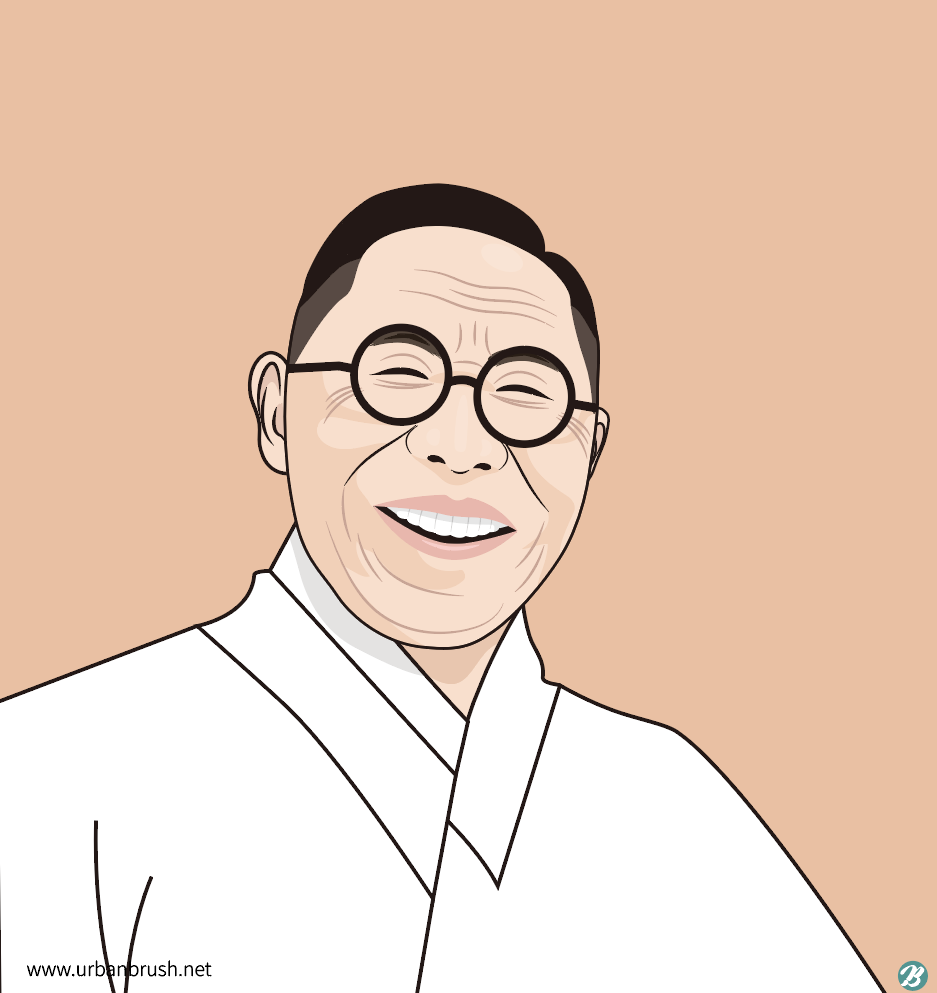

Gu Kim :김구 金九
[1876.7.11~1949.6.26]
건국훈장 대한민국장 · 1962
Achievements공적
○ Activities to join Shinminhoe(A secret society organized in 1907) in 1908○ 1908년 신민회(1907년에 조직된 비밀결사)에 가입하여 활동하였습니다.
○ Served as State Minister of the Provisional Government until 1945 in Shanghai.○ 상하이에서 1945년까지 대한민국 임시정부 국무령을 지냈습니다.
○ 1930: Organization of the Korean Patriotic Corps and support for patriotic activities○ 1930년: 한인애국단 조직 및 애국 활동 지원
○ 1962 Posthumous award from the Republic of Korea Medal of Merit for National Foundation○ 1962년 건국훈장 대한민국장 추서
Verdicts판결
- On March 8, 1896, Kim Gu murdered Tsuchida Zoryo, a Japanese man he met at an inn in the Chihapo area of Hwanghae Province, thinking that he was the Japanese assassin who murdered Empress Myeongseong.1896년 3월 8일, 김구는 황해도 치하포의 한 여관에서 만난 일본인 쓰치다 조료를 명성황후를 살해한 일본인 자객으로 여기고 그를 살해하였습니다.
- The court hanged Kim Gu for robbery and murder, but under the law at the time, a death sentence could only be executed after the king's confirmation, and King Gojong postponed the edict on the death penalty, so Kim Gu was able to save his life.재판부는 김구에게 강도살인죄로 교형을 선고하였으나, 당시 법에 따르면 사형은 국왕의 재가를 받은 뒤에야 집행할 수 있었고, 고종이 사형 집행의 재가를 미루었으므로 김구는 목숨을 건질 수 있었습니다.
- The charge of attempted robbery was a charge created by the Japanese by forcing them to give fictitious testimony through cruel torture. In his memoir, Kim Gu said, “The day An Myeong-geun said he had gathered to attack the wealthy in Anak, I was attending a secret meeting of the Shinminhoe in Seoul. However, the Japanese tortured my student and made him falsely confess that he had seen me and An Myeong-geun together.”강도미수 혐의는 일제가 혹독한 고문으로 허위 진술을 강요하여 꾸며낸 죄목이었습니다. 김구는 회고록에서 “안명근이 안악의 부호를 습격하려고 모였다고 하는 그날, 나는 서울에서 신민회 비밀회의에 참석하고 있었다. 그러나 일제는 나의 제자를 고문하여 나와 안명근이 함께 있는 것을 보았다고 거짓 자백하게 하였다”라고 하였습니다.